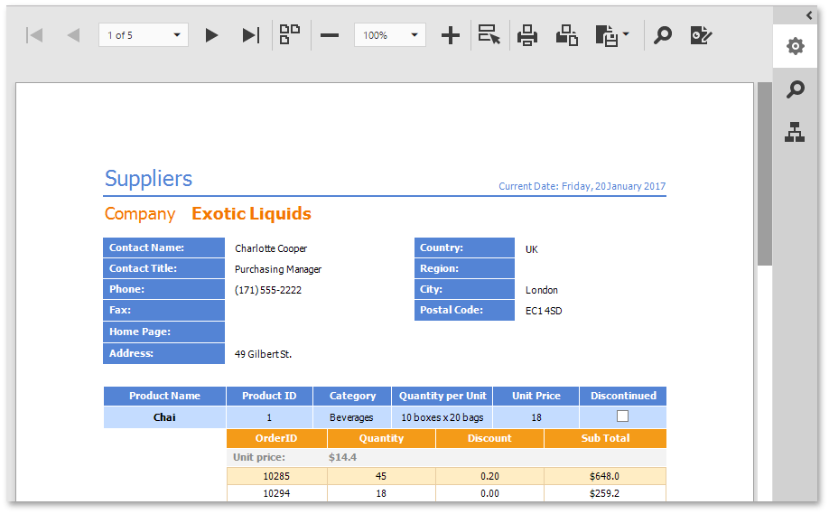

Document Preview
The documents in this section describe the Document Preview that is built into the Web Report Designer.

To display a preview for the report currently being opened in the Web Report Designer, click the Preview  button on the Designer Toolbar.
button on the Designer Toolbar.
The Document Preview provides a Preview Toolbar, as well as the following panels that become available depending on the document content.
| Icon | Element |
|---|---|
| Export Options Panel | |
| Search Panel | |
| Document Map Panel | |
| Preview Parameters Panel |
Note
To learn more about the options available in the preview mode, refer to the HTML5 Document Viewer section of this documentation.